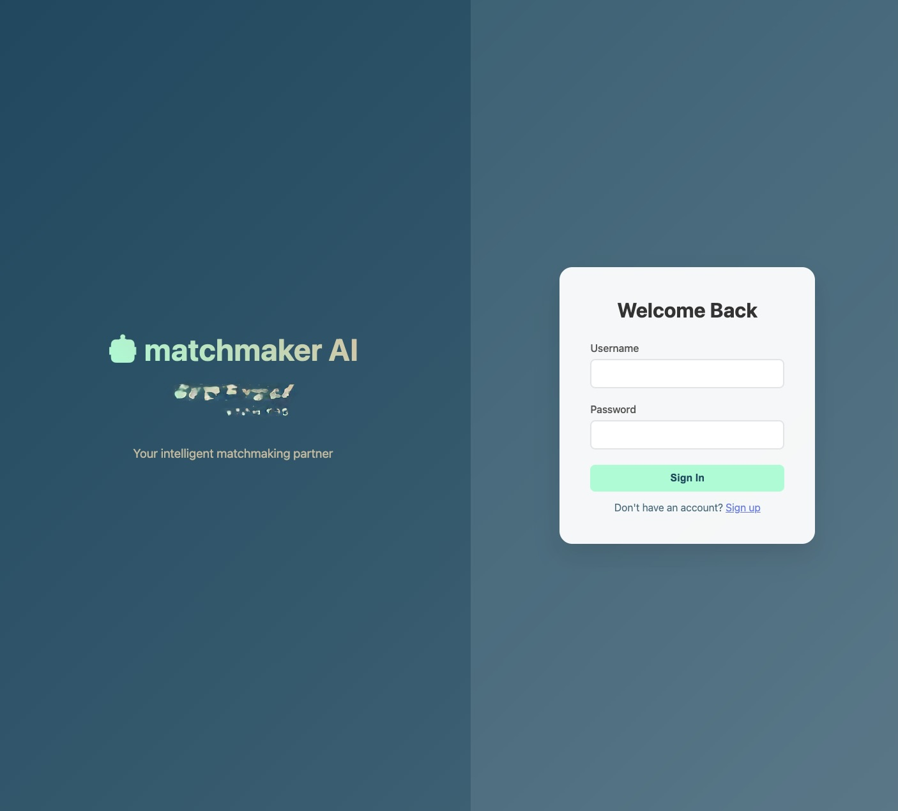
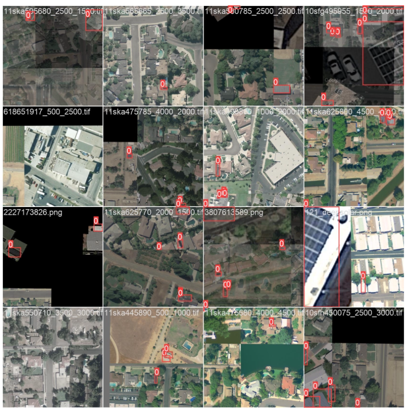
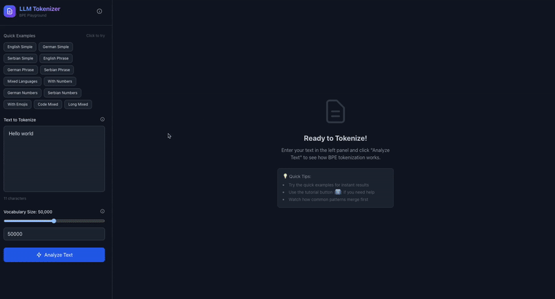

Hi, I'm Milan Kacar
AI Engineer | Software Engineer
AI-driven Software Engineer with over years of experience in e-commerce and FinTech. Geodesy graduate from TU Graz with a strong foundation in mathematics, data analytics and academic research.
Skills & Expertise
A comprehensive toolkit for building modern, AI-driven applications
AI / Machine Learning
Designing, training and deploying deep learning and classical ML systems (research → production).
Data Engineering & Warehousing
Building ETL/ELT pipelines, unified data lakes and performant data warehouses for analytics and ML.
MLOps & Cloud
Production-ready model lifecycle: experiment tracking, serving, monitoring and CI/CD for ML.
Computer Vision & Research
Applied research & projects (e.g., PV panel detection from satellite imagery) using YOLOv5 and hybrid approaches.
Software Engineering & Backend
Architecting and building scalable services, APIs, and automation for data-intensive systems.
Geodesy & GIS
Strong foundation from TU Graz: GNSS, surveying, spatial data processing and map/database workflows.
Programming & Tooling
Polyglot engineer with strengths in scripting, systems and data tooling used in production ML systems.
Analytics & Product Impact
From forecasting & BI to VC market intelligence — delivering actionable insights and end-to-end AI features.
Teaching & Research
Academic experience as TA and contributor to teaching materials: sensor fusion, navigation and ML topics.
Featured Projects
A showcase of my latest work combining frontend excellence with AI innovation

AI-Powered Chat Application
A real-time chat platform with intelligent responses using GPT-4 and custom fine-tuned models.

Looker Vizualisation - PoP
A community-driven interactive analytics PlugIn that shows period-over-period results with no extra compute and no additional queries.

Blog: The Engineering Chronicles
I don't just consume information; I synthesize it into a comprehensive knowledge base covering everything from AGI agents to market prediction models. This blog serves as my 'external brain' proving that true technical mastery comes from consistent, public learning.

Robust Solar Panel Detection
This research achieves 95.7% accuracy in detecting solar panels by combining YOLOv5 with Greedy Model Soups to address distribution shifts in satellite imagery. Validated in Vienna, the system autonomously tracked solar adoption trends from 2015 to 2021, demonstrating scalable renewable energy monitoring

Global Scale Data Platforms
Engineered robust data infrastructure supporting 40+ international markets. Delivering high-fidelity data to power 1,000+ business dashboards and real-time ML pipelines.

FlowState: Gamified Recruitment
Reinventing hiring with a high-velocity, swipe-based interface. Combines AI candidate scoring with human intuition to solve resume fatigue and speed up screening by 10x.

AI SQL Analyst
Autonomous data agent that converts plain English into safe, optimized SQL queries. Democratizes data access and reduces ad-hoc requests by 60% with built-in safety guardrails and auto-visualization.

LLM Tokenizer Playground
Interactive educational tool visualizing Byte Pair Encoding (BPE) for LLMs. Built with a high-performance Rust backend to demonstrate "under the hood" mechanics of AI tokenization in real-time.
Work Experience
My professional journey in tech and AI
AI | Data Lead
Schrack Technik GmbH
Leading the strategic transformation of the company's legacy Data Warehouse to Microsoft Fabric, owning the architecture, migration strategy, and platform rollout end to end. Serve as the primary in-house authority on AI — responsible for governing AI usage across the organization, defining and prioritizing AI initiatives, and acting as the main point of contact and spokesperson for all AI-related topics, both internally and with external partners.
AI Engineer | Data Scientist
Niceshops GmbH
Led the development of AI-driven features for web applications and acted as the primary technical authority for AI initiatives across the company. Designed and implemented scalable, in-house software solutions that significantly improved operational efficiency and employee productivity. Regularly conducted internal workshops and training sessions on Looker and data analytics, promoting a culture of continuous learning and technical excellence.
CTO | Full-stack Developer
Gateway Ventures
Led the implementation of innovative AI-driven projects, including FFG-funded initiatives that emphasized technical novelty. Developed intelligent applications using predictive algorithms, sentiment analysis, and a wide variety of technologies. Managed project planning, technical strategy, and cross-functional coordination as part of the leadership team. Built and maintained React and Python web applications, implemented CI/CD pipelines, and improved performance by 60%.
Software Engineer
TU Graz, VSI
Working on various projects in Automation, Statistics & Geoinformatics in the Automotive industry.
Teaching Assistant
TU Graz, IFG
Teaching the students about Indoor navigation, filtering, sensor fusion.
Survey Engineer
Geodata GmbH
Tunnel survey | 3D Laser scanner measurements